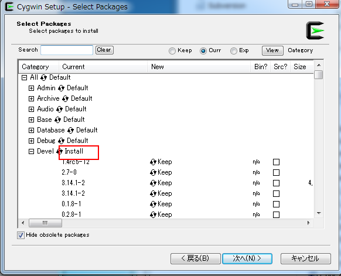

Environment setting¶
For MS-Windows:Install the cygwin.¶
A window data need to compile the script. This compiler invokes a gcc’s preprocessor.
Install the cygwin procedure in the MS-Windows environment as follows..
Download the cygwin¶
down load setup-x86.exe or setup-x86_64.exe
Installation by choosing the “Devel” package¶
In the “Select Packages”, the Devel Default → Install .

Install¶
Install as instructed.
Add the PATH of enviroment variable .¶
set the path to “bin” of the installed folder .
It has become in the following folder by default
C:/cygwin/bin (if 64bit version, c:/cygwin64/bin)
The confirmation¶
Open a command prompt, try typing “gcc”. If you have been installed,it is displayed as follows.

Install the Python 2.x¶
If you make a character resources for multi-lingual , use MS-Excel.This tool for data conversion from a Excel file is written in Python.
Library to read Excel file uses a openpyxl. Please install their own.
This environment has taken the operation check in Python 2.6 or later.
For OSX:Install the Command Line Tools in Xcode.¶
If you can not find the gcc on the terminal, please install the Command Line Tools in Xcode.
A preparation for the multi-lingual¶
You need to install the tools to convert to a binary file from Excel file for message data.
Please download it from here .
Expand the zip file to a top folder on your Unity Project.
The “pythonlib” folder is added as a library path of python (see python manual).
In this example,”Project/KsWindow” is the top folder of UnityProject